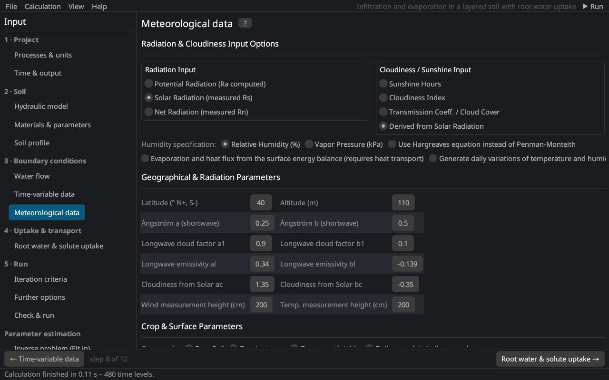

Meteorological data
With Meteorological ET switched on (Processes & units), the potential evaporation and transpiration are computed from meteorological records with the Penman–Monteith combination equation Monteith (1981); Allen et al. (1998) or the Hargreaves equation Hargreaves and Samani (1985), or the evaporation follows from the surface energy balance Saito et al. (2006). The page corresponds to the Meteorological Parameters and Meteorological Conditions dialogs of HYDRUS-1D (file METEO.IN).


Radiation and cloudiness
| Option | Description |
|---|---|
| Potential radiation | No radiation data: the solar radiation is estimated with the Ångström formula Rs = (as + bs n/N) Ra Ångström (1924). |
| Solar radiation | Measured global radiation Rs [MJ/m²/d]. |
| Net radiation | Measured net radiation Rn [MJ/m²/d]. |
| Sunshine hours / cloudiness index / transmission coefficient / derived from solar radiation | What the last column of the records holds and how the cloudiness factor of the long-wave radiation is obtained. |
| Relative humidity / vapor pressure | What the humidity column holds. |
| Hargreaves | Use the Hargreaves equation instead of Penman–Monteith (theory). |
| Energy balance | Evaporation and soil heat flux from the surface energy balance (requires heat transport; theory). |
| Daily variations | Hourly air temperatures and humidities generated from the daily records; the time step is limited to one hour. |
Geographical and radiation parameters
| Parameter | Description |
|---|---|
| Latitude, altitude | location of the site (extraterrestrial radiation, day length, atmospheric pressure) |
| Ångström a, b | as = 0.25, bs = 0.50 (FAO-56) Allen et al. (1998) |
| Long-wave cloud factors a1, b1 | f = a1 n/N + b1 (0.9, 0.1) Doorenbos and Pruitt (1977) |
| Long-wave emissivity al, bl | net emissivity ε = al + bl √ea (0.34, −0.14) |
| Cloudiness from solar radiation ac, bc | f = ac Rs/Rso + bc (1.35, −0.35) |
| Wind and temperature measurement heights | [cm]; must exceed the zero-plane displacement 0.67 × crop height |
Crop
| Option | Description |
|---|---|
| Bare soil | evaporation only |
| Constant crop | crop height, albedo, LAI (and root depth) constant |
| Crop growth table | values interpolated from a table of times |
| Daily crop data in the records | every record carries crop height, albedo, LAI and root depth |
| LAI from height (clipped grass / alfalfa) or direct input | leaf area index from the crop height Allen et al. (1998) or given directly (a value below 1 is read as the soil cover fraction) |
| Radiation extinction coefficient | k for the partitioning of ETp into evaporation and transpiration Ritchie (1972) |
| Canopy interception | interception constant a [mm] von Hoyningen-Hüne (1983); Braden (1985) |
Records
Each record gives the time t [T], radiation [MJ/m²/d], maximum and minimum air temperature [°C], mean relative humidity [%] or vapor pressure [kPa], wind speed [km/d] and sunshine hours (or cloudiness, transmission coefficient), and optionally the crop data. The meteorological inputs are in these fixed units whatever the project's units are (units).
See also: Penman–Monteith equation · Hargreaves equation · surface energy balance · atmospheric inputs
Literature cited in this topic
- Allen, R. G., L. S. Pereira, D. Raes, and M. Smith (1998). Crop Evapotranspiration – Guidelines for Computing Crop Water Requirements. FAO Irrigation and Drainage Paper 56, Food and Agriculture Organization of the United Nations, Rome, 300 pp. https://www.fao.org/4/x0490e/x0490e00.htm
- Braden, H. (1985). Ein Energiehaushalts- und Verdunstungsmodell für Wasser- und Stoffhaushaltsuntersuchungen landwirtschaftlich genutzter Einzugsgebiete. Mitteilungen der Deutschen Bodenkundlichen Gesellschaft 42: 294–299.
- Doorenbos, J., and W. O. Pruitt (1977). Guidelines for Predicting Crop Water Requirements. FAO Irrigation and Drainage Paper 24, Food and Agriculture Organization of the United Nations, Rome, 144 pp.
- Hargreaves, G. H., and Z. A. Samani (1985). Reference crop evapotranspiration from temperature. Applied Engineering in Agriculture 1(2): 96–99. doi:10.13031/2013.26773
- Monteith, J. L. (1981). Evaporation and surface temperature. Quarterly Journal of the Royal Meteorological Society 107(451): 1–27. doi:10.1002/qj.49710745102
- Ritchie, J. T. (1972). Model for predicting evaporation from a row crop with incomplete cover. Water Resources Research 8(5): 1204–1213. doi:10.1029/WR008i005p01204
- Saito, H., J. Šimůnek, and B. P. Mohanty (2006). Numerical analysis of coupled water, vapor, and heat transport in the vadose zone. Vadose Zone Journal 5(2): 784–800. doi:10.2136/vzj2006.0007
- von Hoyningen-Hüne, J. (1983). Die Interception des Niederschlags in landwirtschaftlichen Beständen. Schriftenreihe des DVWK 57: 1–53.
- Ångström, A. (1924). Solar and terrestrial radiation. Quarterly Journal of the Royal Meteorological Society 50(210): 121–126. doi:10.1002/qj.49705021008
All sources: References.